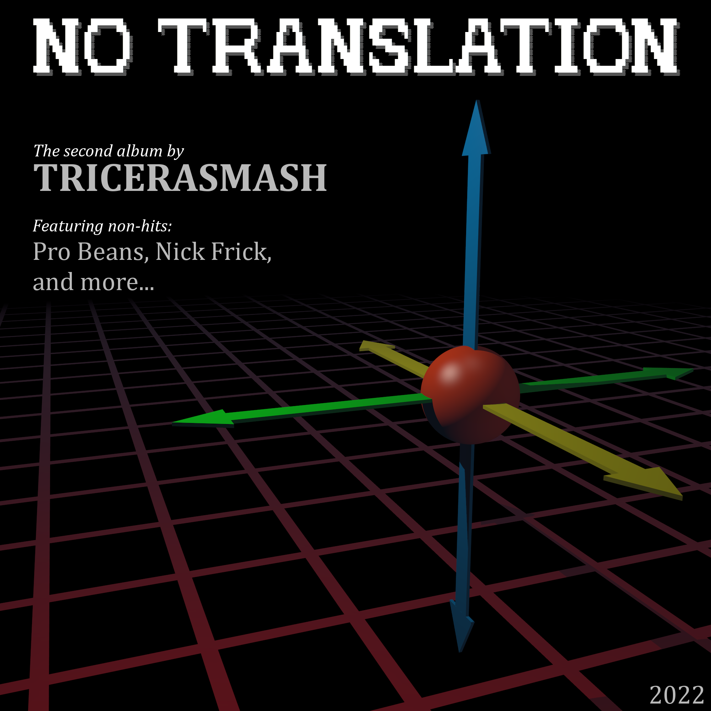

Overview
Mash has made one album before (Invasion), and another one is in the works (No Translation)
No Translation
Some FL studio electronic music with a range of different styles and experimentation.
| Song Name | Release Date |
|---|---|
Nick Frick |
16th April 2022 |
National Grid |
2nd December 2022 |
Pro Beans |
6th October 2021 |
Bill Nye Blues |
2nd December 2022 |
No Translation |
2nd December 2022 |
I Am Soup |
2nd December 2022 |
Halle Circle |
2nd December 2022 |
Poutine |
13th March 2022 |
Dub Movements I |
2nd December 2022 |
Prelude 1- Variation |
3rd January 2022 |
A Crack Addict Blew A Homeless Guy Behind A Dumpster For Crack |
2nd December 2022 |
Seven Over Four |
2nd December 2022 |
Dub Movements II |
2nd December 2022 |
Nonce |
2nd December 2022 |
Are You Ready? |
2nd December 2022 |
No Translation album cover. Click to open the album in bandcamp.

Invasion
This album, released on the 18th may, 2021, contains Mash's old Garageband + FL Studio songs made in 2016 and 2017. They were never released in album form back then.
| Song Name | Release Date |
|---|---|
DjHunter |
October 2016 |
Steampunk Train |
5th november 2016 |
Raytooth |
12th november 2016 |
Revenge Of The Turkeys |
November 2016 |
Disco Dingo |
December 2016 |
Draft |
26th December 2016 |
Hard Wired |
12th February 2017 |
Penta Kill |
9th March 2017 |
Century |
29th april 2017 |
Computer Rap (Beep bop boop its yo boi the rapping computer) |
May 2017 |
Angels With Headphones (bonus track) |
18th may 2021 |
Below: Invasion album cover. Click to open the album in bandcamp.